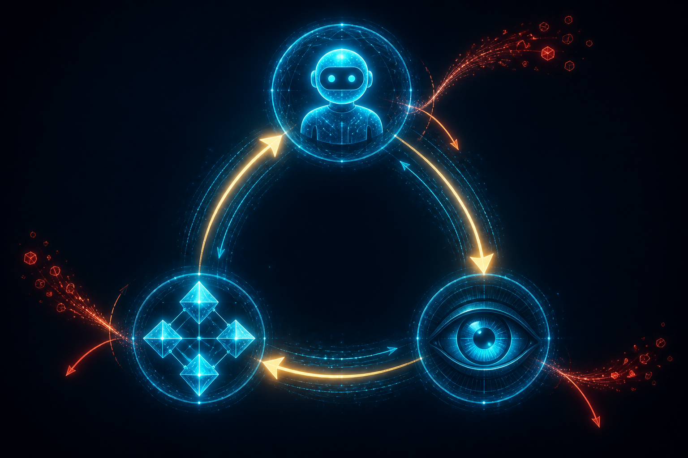

May 2026The ladder itselfLevel 5 · Admissibility
L5: Admissibility
Why your agent hallucinates and how to stop it.

The Reason Agents Lie
Your agent hallucinates because its outputs are unconstrained strings. A field called animal can hold "Dog" or "cat" or "purple thunderclap" and nothing in the system checks. The schema says "string." Strings can be anything. So the agent says anything.
L4 harnesses bound the shape of the output. L5 bounds the meaning.
Admissibility doesn't require proof. It requires being agreeable with the ontology.
The Progression
Step 1 — Start with a schema
You probably already have one. A Pydantic model. A JSON schema. Some fields with types.
{
"sanctuary_function": "string",
"domain": "string",
"level": "integer"
}
The type checker only knows "is this a string." It does not know what the string means.
Step 2 — Break the keys into a semantic web
Each key becomes a typed relationship. sanctuary_function becomes has_sanctuary_function. The value becomes a node — not a string. A node with a type. A type that lives in an ontology.
(Concept) -[has_sanctuary_function]-> (Sanctuary_Function) (Concept) -[has_domain]-> (Domain) (Concept) -[has_level]-> (Complexity_Level)
Now the system can ask: does the value match the expected type? Does the type exist in our ontology? Are the relationships well-formed?
Step 3 — The KG IS the ontology
The knowledge graph is not a database that stores the ontology. The KG is the ontology, structurally. Every node has a type. Every type has restrictions. Every edge resolves from primitive claims. Geometry solved.
The Architecture
Agent ←→ Ontology ←→ Reality sensor Agent — proposes new facts/concepts Ontology — the typed graph of what's allowed Reality — code, files, observations, measurements sensor
Two layers of ontology:
- Foundation ontology — invariant. The primitives. Never changes. Defines what a thing is, what a relationship is, how types compose.
- Accumulated ontology — grows as you learn. Domain-specific. Project-specific. Built from the foundation primitives.
YOUKNOW: The Validator
YOUKNOW is our validator. Every concept that enters the system gets checked against the OWL ontology. If the shape doesn't match the type's restrictions, the concept is rejected — marked as SOUP (Semantically Open Unvalidated Proposition), not admitted as knowledge.
SOUP is the holding pen. Concepts in SOUP can be repaired — fill the missing fields, fix the relationships, re-submit. Or they stay in SOUP forever, never participating in inference.
A real example
An agent emits this entity chain:
🐛⛓️ Bug_Voice_Agent_Cant_Hear_Caller {
is_a=Bug,
desc="Caller's audio is silent in the transcript"
}
+{part_of=Twi_Voice_Agent_Stack}
+{has_trigger=Inbound_Call_Lambda}
+{has_observed_behavior=Empty_Transcript_String}
YOUKNOW checks: does Bug exist as a class? Yes. Does it require part_of a Giint_Component? Yes. Is Twi_Voice_Agent_Stack a Giint_Component? Check the graph. Yes. Are has_trigger and has_observed_behavior valid relationships for Bug? Check the OWL restrictions. Yes. All checks pass. Admitted as knowledge.
If any check fails, the concept hits SOUP and the validator returns a message telling the agent exactly what's missing. The agent reads the message, fixes the chain, re-emits. The system never admits a malformed claim.
Why This Is The Deep Path
L4 makes the agent reliable. L5 makes the agent incapable of lying. Different category of guarantee.
L4 says: "the output will have the right shape."
L5 says: "the output will refer to real things, with real relationships, in a graph that the system can independently verify."
The result: the agent cannot hallucinate because the geometry is solved.
You give up something to get this. You give up speed. You give up the freedom to throw any string at the system. You commit to an ontology, which means you commit to thinking about your domain hard enough to type it. Most people won't do this. That's why most agents stay at L4.
What This Unlocks
Once admissibility is in place, the next two layers become possible:
- L6 — Concentration: measure how well the agent uses the ontology, prevent drift over long runs.
- L7 — Emergence: meta-compile the program's language into the KG so the system self-evolves.
Without L5, those don't work. You can't measure ontology usage if there's no ontology. You can't self-evolve a language that has no formal grounding. L5 is the gate.
Where To See It Running
YOUKNOW + CartON is the live admissibility stack. Every concept emitted in any of our agent sessions runs through YOUKNOW. The blog you're reading was written by an agent that has L5 enforced on every entity chain. The proof is the system.